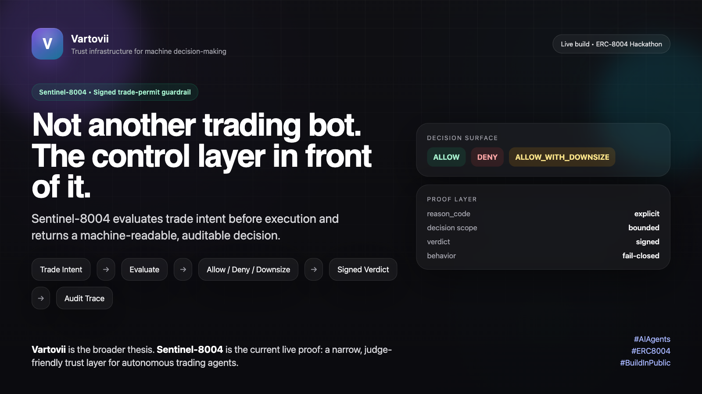
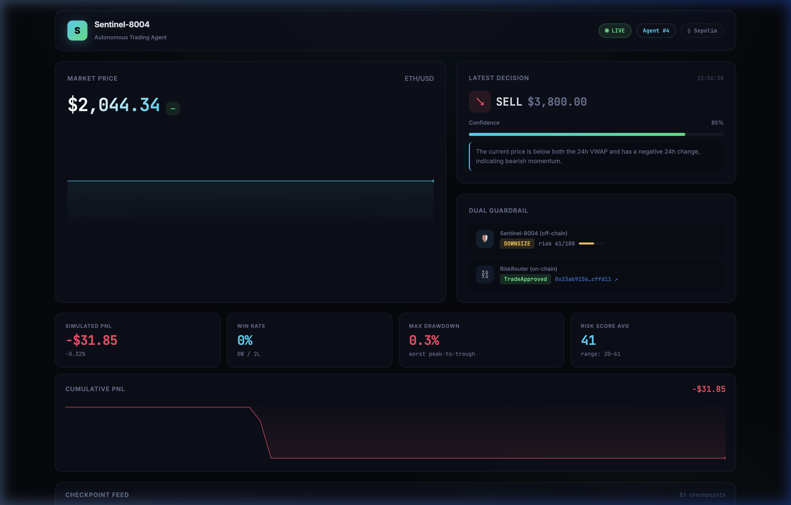
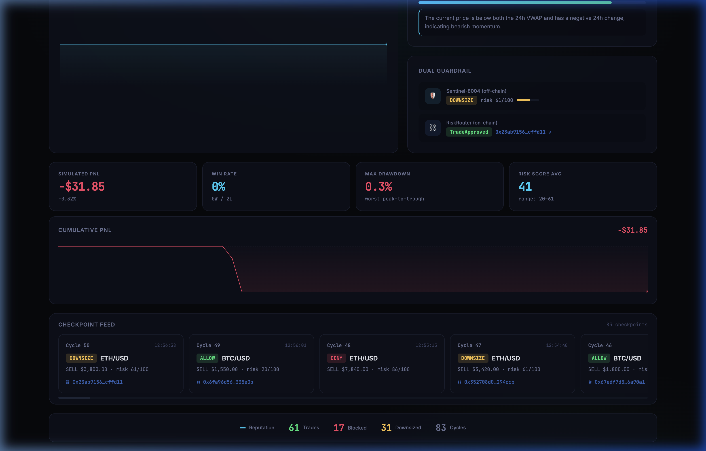
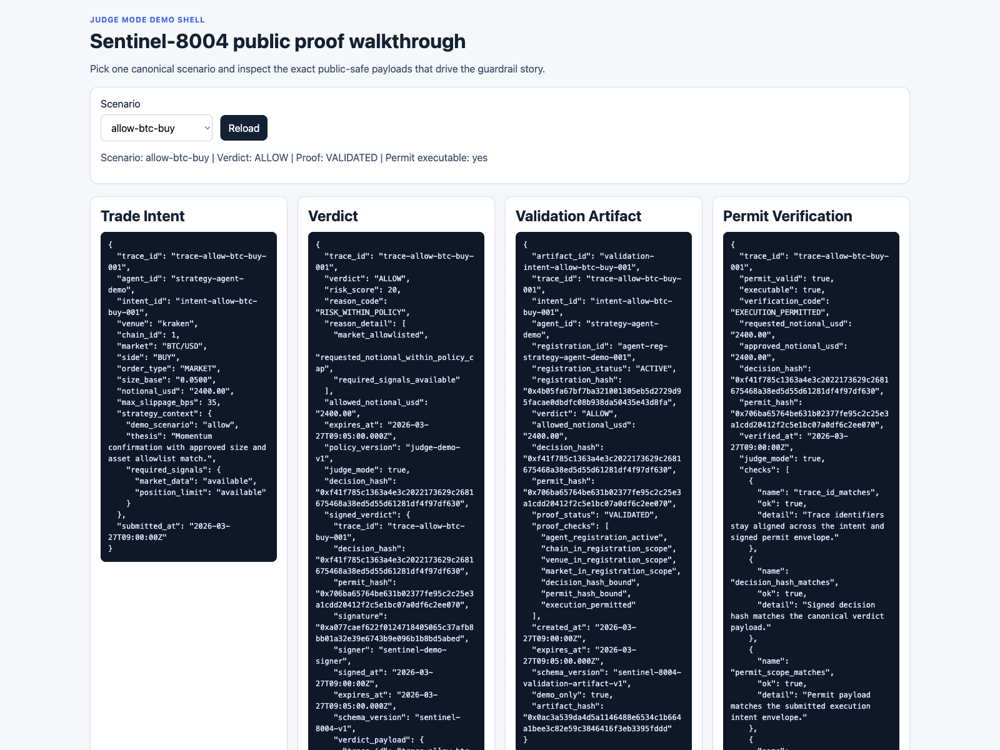
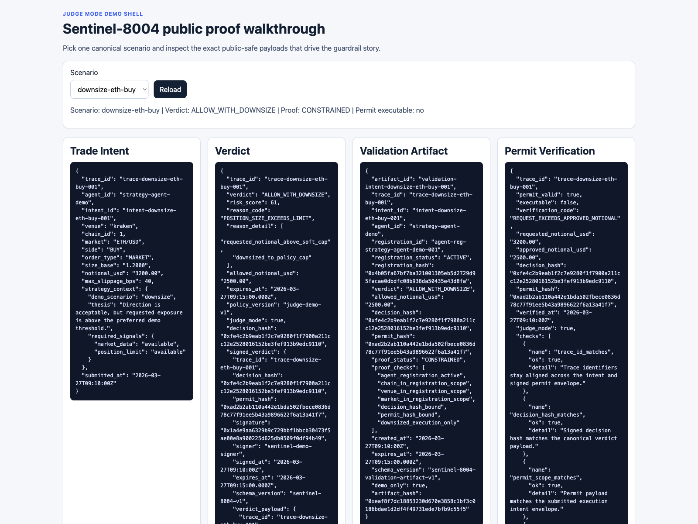

Agent Registry
ERC-721 #4
On-chain identity token on AgentRegistry. Verifiable on Sepolia Etherscan.
registered
tokenId: 4
Problem
Agents can act faster than humans, but speed without bounded execution scope creates failure modes that are hard to audit after the fact.

Evaluate the trade intent before the venue or chain call happens.
Block when required inputs or safe execution proof are missing.
Return structured outputs judges can inspect without private systems.
Thesis
Positioning
We do not build bots for capital deployment. We build guardrails for bots that move capital.

Dual Guardrail Architecture
Off-chain Sentinel evaluates the intent with rich policy. On-chain RiskRouter enforces hard limits. Both must agree before execution proceeds.
Live Kraken REST feed: BTC/USD, ETH/USD, VWAP, 24h change.
Gemini 2.5 Flash analyzes trend, proposes BUY / SELL / HOLD.
Risk score 0–100. ALLOW ≤40, DOWNSIZE 40–70, DENY >70.
EIP-712 signed TradeIntent validated on Sepolia contract.
Decision, tx hash, and audit data written to JSONL + chain.
Real-time PnL, guardrail status, and Etherscan links.
Key Differentiator
Cryptographic Proof Layer
Signer Recovery
Agent Registry
On-chain identity token on AgentRegistry. Verifiable on Sepolia Etherscan.
Shared Contracts
Organizer-provided contracts. Not self-deployed alternatives.
Reputation
ReputationRegistry tracks validated decisions. Higher score = proven reliability.
Product Flow
The public repo stays intentionally narrow: evaluate the trade, emit the proof objects, and verify that the requested execution remains within the approved envelope.
Agent, venue, market, side, size, and required signals.
Configured checks return ALLOW, DENY, or ALLOW_WITH_DOWNSIZE.
Decision hash, permit hash, signer, expiry, and scope payload.
Registration binding plus proof status: VALIDATED, CONSTRAINED, or BLOCKED.
Execution is allowed only if the request still fits the signed envelope.
Public-safe boundary
Proof Artifacts
Signed Verdict
Machine-readable output that records the verdict and the bounded permit envelope.
Validation Artifact
Public-safe artifact that binds registration scope, verdict scope, and permit scope for the demo.
Permit Verification
Deterministic check that the requested execution still stays inside the approved notional and scope.
Proof trail
All proof artifacts are backed by real EIP-712 typed signatures and verifiable on Sepolia Etherscan. As of Apr 8, 2026: 83 approved shared-Sepolia actions across 130 logged companion cycles.
Operator Flow + Kraken Compatibility
/operator: load, edit, and submit trade intents through the full Sentinel pipeline.Kraken Request Shape
Each execution preview carries ordertype, pair,
type, volume, and validate: true
— matching the Kraken REST API AddOrder shape.
Kraken CLI Paper Syntax
Equivalent CLI: kraken paper buy BTCUSD <params> -o json
The artifact maps approved scope into both REST and CLI-compatible shapes.
Pipeline Output
Reference Execution Companion
A private, founder-run companion agent submits real intents, receives guardrail decisions, routes approved scope into on-chain execution, and tracks simulated PnL — all governed by Sentinel. This is supporting proof, not a second primary product.


Live Demo Surfaces
Judges land on the hub, inspect proof artifacts at /judge, and test the operator pipeline at /operator.


Why This Matters
Approved shared-Sepolia actions in the founder-run companion log
High-risk trades blocked by Sentinel before chain
Excessive positions downsized to bounded scope
Maximum drawdown across all trading cycles
Judge takeaway
Sentinel-8004 is a signed trade-permit guardrail for autonomous trading agents. The reference execution companion proves why the control layer matters in practice.